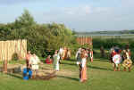
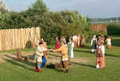
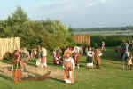
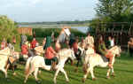
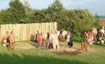
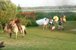
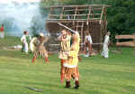
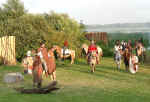
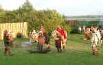
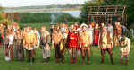

Wikingertage Schleswig 2002 - Das Freilichttheater zeigte
"Gudmunds Tod"
von "Midgaard Skalden" in einer Inszenierung Hinnerk Walbohm
Auf den Königswiesen in Schleswig, unmittelbar am Ufer der Schlei, hat die ca. 70 Personen umfassende Schleswiger Laien-Theatergruppe "Midgaard Skalden - Wikingerspiel-Freunde Schleswig e.V." in einer Inszenierung von Hinnerk Walbohm bei den diesjährigen Wikingertagen eine eindrucksvolle Darstellung abgeliefert. Während der dreitägigen Veranstaltung wurde das Schauspiel "Gudmunds Tod" insgesamt sieben Mal aufgeführt. Auf der Tribüne fanden ca. 600 Personen Platz.
Die Bewohner des Wikingerdorfes sind in heller Aufregung. Endlich kehren ihre Männer von Wikfahrt heim. Leider sind einige von ihnen im Kampf gefallen, so auch ihr Anführer Gudmund. Sein Bruder Ingjölf verlangt nun, dass dessen Witwe, Gunvor, ihn als Beschützer des Hofes und als Vormund ihrer Kinder akzeptiert. Gunvor und ihr Sohn Helge weisen diese Forderung jedoch energisch zurück. Auch dem Wunsch Ingjölfs zur Vermählung ihrer Tochter mit dem ältesten Sohn Ingjölfs erteilt Gunvor eine klare Absage.
Ingjölf lässt jedoch nicht locker, da er sich mit aller Macht die Güter des gefallenen Bruders aneignen will. Dazu gehört auch ein wertvolles Schwert, das Gudmund seinem jungen und unerfahrenen Sohn Helge vererbt hat. Um eine Regelung herbeizuführen wird ein Thing unter dem Vorsitz des alten Goden einberufen. Auf dem Thing, der wikingischen Form der heutigen Gemeindeversammlung, ist auch ein Vertreter des Königs anwesend. Es wird schließlich festgelegt, dass der König entscheiden soll. So lange will Ingjölf jedoch nicht warten und startet einen Überfall auf Gunvors Hof. Mitten in den Kampfhandlungen trifft jedoch der König mit seinem Gefolge ein. Am Ende beugen sich alle Parteien dem Schiedsspruch des Königs und ein wildes Spektakel nimmt ein friedliches Ende.
Die Bilder (Premieren-Veranstaltung 02.08.02) können jeweils durch Anklicken vergrößert dargestellt werden!
    


    


Nach § 22 KunstUrhG dürfen Fotografien von Personen grundsätzlich nur mit Einwilligung der Abgebildeten verbreitet oder öffentlich zur Schau gestellt werden.
Ich unterstelle, dass die hier gezeigten Personen keine Einwände gegen diese Veröffentlichung haben. Falls sich dennoch jemand auf meinen Fotos wiedererkennt und mit der Veröffentlichung wider Erwarten nicht einverstanden sein sollte, so genügt natürlich eine kurze Mitteilung an mich und ich werde die entsprechenden Bilder unverzüglich entfernen.